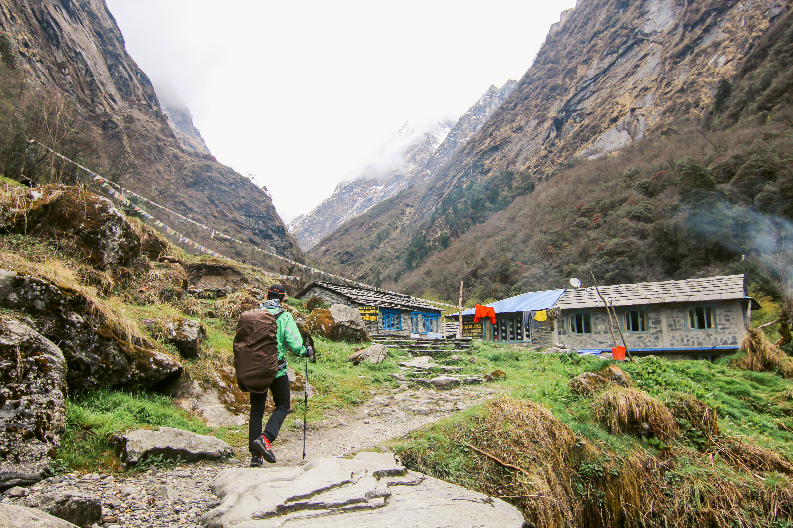

In the shadow of the mighty Kanchenjunga, Sikkim's culture isn't just preserved — it lives. Here, ancient rituals breathe in rhythm with Himalayan winds, and every prayer flag fluttering in the breeze whispers tales of unity, faith, and timeless beauty. In Sikkim, every mountain has a story, every forest a song, and every smile a warm invitation.
| Capital: Gangtok
| Languages: Nepali, Bhutia, Lepcha
| Organic State: Declared a fully organic state in 2016.
| Cleanest State: Won the "Cleanest State" title in 2016.
| Culture: Diverse ethnic groups, including Lepchas, Bhutias, and Nepalese, with distinct
customs and traditions.
| UNESCO Heritage Site: Home to Khangchendzonga National Park, a UNESCO World Heritage site.
If you are passionate about Sikkimese heritage, culture, and tradition, we invite you to join hands with us. By becoming a member, volunteering your time, or providing support, you can actively contribute to the preservation and promotion of Sikkim's invaluable cultural legacy.
Join Us Today"Sikkim's cultural heritage is a vibrant mosaic of traditions from the Lepcha, Bhutia, and Nepali communities. Each festival, ritual, and craft carries centuries of wisdom and spirituality."